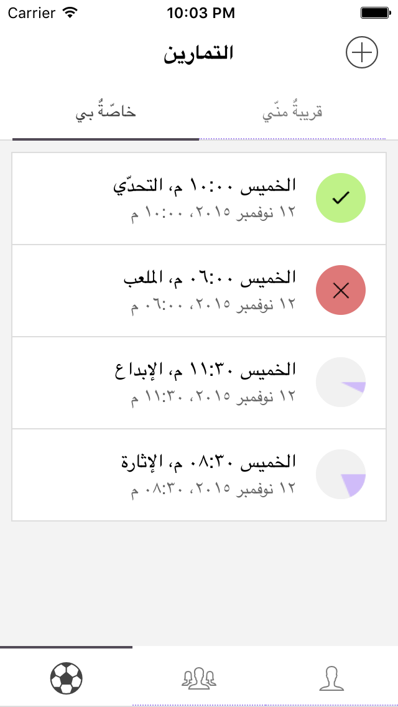

مرحبًا مليون.
تطبيق “تمرين” طُوّر بعناية لمن يُدير مجموعات اللعب وَ لمن يشارك فيها أيضًا، لا حاجة لاستخدام تطبيق “وتساب” للتحضير إلى “التمارين” بعد الآن. تطبيق “تمرين” سيرسل إليك كلّ الإشعارات التي لك علاقة بها، “بداية التحضير إلى تمرينٍ جديد”، “لاعبٌ قرّر الحضور”، “لاعبٌ اعتذر عن الحضور”، “اكتمال التحضير إلى التمرين”، و غيرها الكثير.
تحميل من متجر آبل (Apple Store)
 تحميل من متجر قوقل (Google Play)
تحميل من متجر قوقل (Google Play)